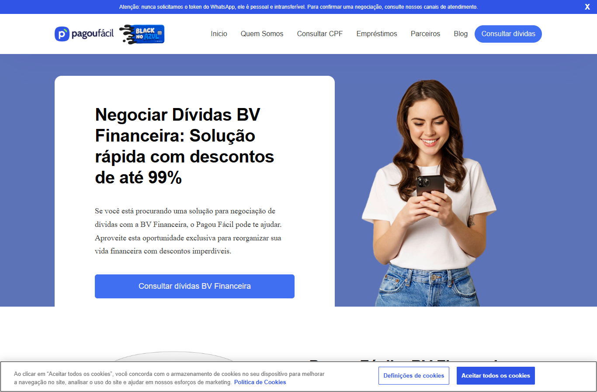
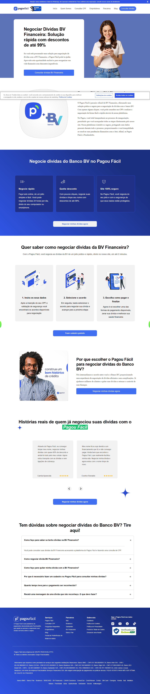

SIMIO · dossiê de candidato · campanha simio-20261119-174043-8bbc · gerado em 2026-11-19T21:22:03+00:00
https://www.pagoufacil.com.br/parceiros/bvfinanceira/
REVIEW_REQUIRED Prioridade MEDIUM · Cenário B_AMBIGUOUS_COMMUNICATION · Revisão humana: PENDING
Este dossiê apresenta indícios para apoio à auditoria. Não constitui conclusão regulatória. As conclusões automatizadas devem ser verificadas contra as evidências brutas abaixo (screenshots, catálogo e arquivos com hash). Conteúdo de terceiros é exibido como texto; links não são clicáveis por segurança.
A página analisada pertence ao portal de negociação de dívidas multibanco 'Pagou Fácil' (Paschoalotto Serviços Financeiros S/A) e consiste em uma página informativa dentro do diretório '/parceiros/bvfinanceira/'. Toda a identidade visual, logotipo no topo, domínio e canais de atendimento são claramente identificados como sendo do Pagou Fácil. O conteúdo textual explica de forma transparente que a plataforma atua na intermediação de acordos entre o consumidor e o Banco BV, enquadrando-se nos critérios de divulgação comercial legítima por plataforma multibanco/assessoria identificada, sem causar confusão de autoria com canais oficiais da instituição.


| Ref | Tipo | Local | Conteúdo |
|---|---|---|---|
| E-URL | domain | url | URL final: https://www.pagoufacil.com.br/parceiros/bvfinanceira/ (domínio: www.pagoufacil.com.br) |
| E-COLLECT | network | collection | Status da coleta: OK; HTTP 200; ocorrências: network did not become idle (continuing) |
| E-DISC-001 | text | search_index | Índice de busca (grounding): pagoufacil.com.br — **Pagou Fácil (Paschoalotto)** (`pagoufacil.com.br`) | **Evidência:** Possui landing pages dedicadas à marca onde declara expressamente: *"O Pagou Fácil é parceiro oficial da BV Financeira, oferecendo uma solução prática e segura para a negociação de dívidas com o banco BV"* e classifica a página como *"Site 100% seguro"* | Oferece consulta de CPF e emissão de acordos/boletos |
| E-SHOT-VIEWPORT | screenshot | viewport | evidence\C63d974c695\attempt-1\viewport.png (sha256 11082bf7ef0e5a59…) |
| E-SHOT-FULL | screenshot | page | evidence\C63d974c695\attempt-1\fullpage.png (sha256 88ebf54b0678905a…) |
| E-TITLE | title | head | BV Financeira - Se Pagou Fácil, é Paschoalotto |
| E-META-1 | meta | head | description: Precisa negociar dívidas com a BV Financeira? Utilize o Pagou Fácil para renegociar online de forma rápida e segura. |
| E-META-2 | meta | head | og:site_name: Se Pagou Fácil, é Paschoalotto |
| E-META-3 | meta | head | og:title: BV Financeira - Se Pagou Fácil, é Paschoalotto |
| E-META-4 | meta | head | og:description: Precisa negociar dívidas com a BV Financeira? Utilize o Pagou Fácil para renegociar online de forma rápida e segura. |
| E-CANONICAL | meta | head | https://www.pagoufacil.com.br/parceiros/bvfinanceira/ |
| E-HEAD-1 | heading | page | Negociar Dívidas BV Financeira: Solução rápida com descontos de até 99% |
| E-HEAD-2 | heading | page | Pagou Fácil + BV Financeira |
| E-HEAD-3 | heading | page | Negocie dívidas do Banco BV no Pagou Fácil |
| E-HEAD-4 | heading | page | Negocie rápido |
| E-HEAD-5 | heading | page | Ganhe desconto |
| E-HEAD-6 | heading | page | Site 100% seguro |
| E-HEAD-7 | heading | page | Quer saber como negociar dívidas da BV Financeira? |
| E-HEAD-8 | heading | page | 1. Insira os seus dados |
| E-HEAD-9 | heading | page | 2. Selecione o acordo |
| E-HEAD-10 | heading | page | 3. Escolha como pagar e finalize |
| E-HEAD-11 | heading | page | Por que escolher o Pagou Fácil para negociar dívidas do Banco BV? |
| E-HEAD-12 | heading | page | Histórias reais de quem já negociou suas dívidas com o Pagou Fácil |
| E-HEAD-13 | heading | page | Tem dúvidas sobre negociar dívidas do Banco BV? Tire aqui! |
| E-HEAD-14 | heading | page | Como faço para saber se tenho dívidas na BV Financeira? |
| E-HEAD-15 | heading | page | Como negociar dívida BV Financeira? |
| E-HDR | text | header | Atenção: nunca solicitamos o token do WhatsApp, ele é pessoal e intransferível. Para confirmar uma negociação, consulte nossos canais de atendimento. X Inicio Quem Somos Consultar CPF Empréstimos Parceiros Blog Consultar dívidas |
| E-FOLD | text | viewport (acima da dobra) | Menu Inicio Quem Somos Consultar CPF Empréstimos Empréstimo Antecipação de Salário Empréstimo Cartão de Crédito Empréstimo Consignado Empréstimo Fgts Empréstimo Garantia de Veículo Empréstimo Imóvel Empréstimo Pessoal Parceiros Blog Consultar dívidas Siga o Pagou Fácil nas rede sociais Atenção: nunca solicitamos o token do WhatsApp, ele é pessoal e intransferível. Para confirmar uma negociação, consulte nossos canais de atendimento. X Inicio Quem Somos Consultar CPF Empréstimos Parceiros Blog Consultar dívidas Negociar Dívidas BV Financeira: Solução rápida com descontos de até 99% Se você está procurando uma solução para negociação de dívidas com a BV Financeira, o Pagou Fácil pode te ajudar. Aproveite esta oportunidade exclusiva para reorganizar sua vida financeira com descontos imperdíveis. Consultar dívidas BV Financeira Pagou Fácil + BV Financeira Ao clicar em “Aceitar todos os cookies”, você concorda com o armazenamento de cookies no seu dispositivo para melhorar a navegação no site, analisar o uso do site e ajudar em nossos esforços de marketing. Política de Cookies Definições de cookies Aceitar todos os cookies |
| E-FTR | text | footer | O Pagou Fácil é uma plataforma de pagamentos desenvolvida pela Paschoalotto, para ajudar as pessoas a negociarem suas dívidas de forma online e segura. Serviços Pagou Fácil Consultar CPF Perguntas frequentes Empréstimos Blog Portal de Preferências do titular de dados Parceiros Itaú Bradesco Santander BV Financeira Banco Pan Sobre-nós Ouvidoria Política de Cookies Política de Privacidade Portal do Titular de Dados Denuncie uma fraude Siga o Pagou Fácil nas redes sociais Pagou Fácil uma empresa do GRUPO PASCHOALOTTO. © Todos os direitos reservados Grupo Paschoalotto Informamos que atuamos como prestador de serviços das seguintes instituições financeiras: Banco BMG – CNPJ 61.186.680/0001-74, Banco Inter S/A – CNPJ 00.416.968/0001-01, Banco C6 S/A – CNPJ31.872.495/0001-72, Banco Bradesco S/A – CNPJ 60.746.948/0001-12, Banco Digio S/A – CNPJ 27.098.0/0001-45, Banco RCI Brasil S/A – CNPJ – 62.307.848/0001-15, Banco Santander S/A – CNPJ 90.400.888/0001-42, ITAU UNIBANCO S/A – CNPJ 60.701.190/0001-04, entre outras e essas tampouco, em nome da empresa Paschoalotto Serviços Financeiros S/A, não exigem antecipação de pagamentos ou práticas dessas. FIQUE ATENTO PARA NÃO SER VÍTIMA DE GOLPE OU FRAUDES Banco BMG Banco Pan Bradesco BRBCARD BV Financeira CAIXA Consórcio ConectCar Credi Nissan Crefaz DM Card Energisa Honda Itaú Mobilize Natura PortoBank Qista QuintoAndar Santander Sicoob Volkswagen |
| E-NAV | nav | header | Atenção: nunca solicitamos o token do WhatsApp, ele é pessoal e intransferível. Para confirmar uma negociação, consulte nossos canais de atendimento. <https://api.whatsapp.com/send/?phone=551421088000> | <https://www.pagoufacil.com.br/> | Inicio <https://www.pagoufacil.com.br/> | Quem Somos <https://www.pagoufacil.com.br/quem-somos/> | Consultar CPF <https://www.pagoufacil.com.br/consultar-cpf> | Empréstimos <https://www.pagoufacil.com.br/emprestimos/> | Parceiros <https://www.pagoufacil.com.br/parceiros> | Blog <https://www.pagoufacil.com.br/blog> | Consultar dívidas <https://queropagar.pagoufacil.com.br/> |
| E-CTA-1 | cta | header | X |
| E-CTA-2 | cta | page | Consultar dívidas BV Financeira <https://queropagar.pagoufacil.com.br/> |
| E-CTA-3 | cta | page | Negociar minhas dívidas agora <https://queropagar.pagoufacil.com.br/> |
| E-CTA-4 | cta | page | Fazer cadastro gratuito <https://queropagar.pagoufacil.com.br/> |
| E-CTA-5 | cta | page | Negociar minhas dívidas agora <https://queropagar.pagoufacil.com.br/> |
| E-CTA-6 | cta | page | Voltar |
| E-CTA-7 | cta | page | Próximo |
| E-CTA-8 | cta | page | Negociar minhas dívidas agora <https://queropagar.pagoufacil.com.br/> |
| E-CTA-9 | cta | page | Definições de cookies |
| E-CTA-10 | cta | page | Aceitar todos os cookies |
| E-CONTACT-1 | contact | page | Facebook <https://www.facebook.com/pagoufacil> |
| E-CONTACT-2 | contact | page | Instagram <https://www.instagram.com/pagoufacil/> |
| E-CONTACT-3 | contact | header | Atenção: nunca solicitamos o token do WhatsApp, ele é pessoal e intransferível. Para confirmar uma negociação, consulte nossos canais de atendimento. <https://api.whatsapp.com/send/?phone=551421088000> |
| E-CONTACT-4 | contact | footer | Instagram <https://www.instagram.com/pagoufacil/> |
| E-CONTACT-5 | contact | footer | Facebook <https://web.facebook.com/pagoufacil?_rdc=1&_rdr> |
| E-IMG-1 | image | header (acima da dobra) | imagem alt='Pagou Facil' src=https://www.pagoufacil.com.br/wp-content/themes/pagoufacil/img/logo-pagoufacil-bf.png (260x56, acima da dobra) |
| E-IMG-2 | image | footer | imagem alt='Logo Pagou Fácil' src=https://www.pagoufacil.com.br/wp-content/themes/pagoufacil/img/LOGO-PF.webp (200x51, abaixo da dobra) |
| E-IMG-3 | image | footer | imagem alt='Instagram' src=https://www.pagoufacil.com.br/wp-content/themes/pagoufacil/img/lp-pf/icons/InstagramLogo.webp (32x33, abaixo da dobra) |
| E-IMG-4 | image | footer | imagem alt='Youtube' src=https://www.pagoufacil.com.br/wp-content/themes/pagoufacil/img/lp-pf/icons/YoutubeLogo.webp (32x33, abaixo da dobra) |
| E-IMG-5 | image | footer | imagem alt='Facebook' src=https://www.pagoufacil.com.br/wp-content/themes/pagoufacil/img/lp-pf/icons/FacebookLogo.webp (32x33, abaixo da dobra) |
| E-IMG-6 | image | footer | imagem alt='Tiktok' src=https://www.pagoufacil.com.br/wp-content/themes/pagoufacil/img/lp-pf/icons/TiktokLogo.webp (32x33, abaixo da dobra) |
| E-TXT-001 | text | page | Parceiros |
| E-TXT-002 | text | page | Atenção: nunca solicitamos o token do WhatsApp, ele é pessoal e intransferível. Para confirmar uma negociação, consulte nossos canais de atendimento. |
| E-TXT-003 | text | page | Parceiros |
| E-TXT-004 | text | page | Negociar Dívidas BV Financeira: Solução rápida com descontos de até 99% |
| E-TXT-005 | text | page | Se você está procurando uma solução para negociação de dívidas com a BV Financeira, o Pagou Fácil pode te ajudar. Aproveite esta oportunidade exclusiva para reorganizar sua vida financeira com descontos imperdíveis. |
| E-TXT-006 | text | page | Consultar dívidas BV Financeira |
| E-TXT-007 | text | page | Pagou Fácil + BV Financeira |
| E-TXT-008 | text | page | O Pagou Fácil é parceiro oficial da BV Financeira, oferecendo uma solução prática e segura para a negociação de dívidas com o banco BV. Com apenas alguns cliques, você pode consultar seu CPF e realizar a negociação de forma fácil e rápida através da nossa plataforma. |
| E-TXT-009 | text | page | Negocie dívidas do Banco BV no Pagou Fácil |
| E-TXT-010 | text | page | Quer saber como negociar dívidas da BV Financeira? |
| E-TXT-011 | text | page | Com o Pagou Fácil, você negocia as dívidas da BV de um jeito prático e rápido, direto no nosso site, em até 2 minutos. |
| E-TXT-012 | text | page | Por que escolher o Pagou Fácil para negociar dívidas do Banco BV? |
| E-TXT-013 | text | page | Nós intermediamos o acordo entre você e o Banco BV, proporcionando uma experiência de negociação de dívidas eficiente e sem complicações. Já ajudamos milhares de clientes a quitar suas dívidas e retomar o controle de suas finanças. |
| E-TXT-014 | text | page | Pela primeira vez na minha vida, atrasei o cartão de crédito. Entrei em contato com o banco e eles me orientaram que eu podia negociar através do Pagou Fácil. Acessei o site, fiz meu cadastro e pronto, já encontrei minha dívida. Muito fácil, assim como eles dizem. |
| E-TXT-015 | text | page | Tem dúvidas sobre negociar dívidas do Banco BV? Tire aqui! |
| E-TXT-016 | text | page | Como faço para saber se tenho dívidas na BV Financeira? |
| E-TXT-017 | text | page | Você pode consultar suas dívidas da BV Financeira acessando a plataforma do Pagou Fácil e fazendo uma consulta de CPF. |
| E-TXT-018 | text | page | Como negociar dívida BV Financeira? |
| E-TXT-019 | text | page | Como faço para quitar minha dívida com a BV Financeira? |
| E-TXT-020 | text | page | Parceiros |
| E-TXT-021 | text | page | BV Financeira |
| E-TXT-022 | text | page | Banco Pan |
| E-TXT-023 | text | page | Ouvidoria |
| E-TXT-024 | text | page | Informamos que atuamos como prestador de serviços das seguintes instituições financeiras: Banco BMG – CNPJ 61.186.680/0001-74, Banco Inter S/A – CNPJ 00.416.968/0001-01, Banco C6 S/A – CNPJ31.872.495/0001-72, Banco Bradesco S/A – CNPJ 60.746.948/0001-12, Banco Digio S/A – CNPJ 27.098.0/0001-45, Banco RCI Brasil S/A – CNPJ – 62.307.848/0001-15, Banco Santander S/A – CNPJ 90.400.888/0001-42, ITAU |
| E-TXT-025 | text | page | UNIBANCO S/A – CNPJ 60.701.190/0001-04, entre outras e essas tampouco, em nome da empresa Paschoalotto Serviços Financeiros S/A, não exigem antecipação de pagamentos ou práticas dessas. FIQUE ATENTO PARA NÃO SER VÍTIMA DE GOLPE OU FRAUDES |
| E-TXT-026 | text | page | Banco BMG Banco Pan Bradesco BRBCARD BV Financeira CAIXA Consórcio ConectCar Credi Nissan Crefaz DM Card Energisa Honda Itaú Mobilize Natura PortoBank Qista QuintoAndar Santander Sicoob Volkswagen |
| Dimensão | Sinal | Achado | Refs |
|---|---|---|---|
| VISUAL_IDENTITY | LEGITIMATE | A página utiliza a identidade visual própria da plataforma 'Pagou Fácil' (Grupo Paschoalotto), com cabeçalho, logotipo e paleta de cores próprios, sem imitar os canais oficiais do Banco BV. | E-SHOT-VIEWPORT E-SHOT-FULL E-IMG-1 |
| DECLARED_COMMERCIAL_IDENTITY | LEGITIMATE | A plataforma se apresenta claramente como 'Pagou Fácil', pertencente ao Grupo Paschoalotto (Paschoalotto Serviços Financeiros S/A), em seu domínio, título, cabeçalho e rodapé. | E-URL E-TITLE E-IMG-1 E-FTR |
| CORRESPONDENT_TRANSPARENCY | LEGITIMATE | A comunicação explicita no corpo da página que atua como parceira e intermediadora de acordos entre o cliente e o Banco BV, além de declarar no rodapé sua atuação como prestadora de serviços para diversas instituições financeiras. | E-HEAD-2 E-TXT-008 E-TXT-013 E-FTR |
| INSTITUTIONAL_LANGUAGE | LEGITIMATE | O texto é redigido em nome do Pagou Fácil como terceiro intermediador ('o Pagou Fácil pode te ajudar', 'Nós intermediamos o acordo entre você e o Banco BV'), sem assumir a primeira pessoa como se fosse o banco. | E-TXT-005 E-TXT-008 E-TXT-013 |
| LOGO_USAGE | LEGITIMATE | O logotipo do Banco BV é exibido em conjunto com o logotipo do Pagou Fácil ('p + BV banco') para ilustrar a parceria comercial em página interna dedicada a parceiros. | E-SHOT-FULL E-HEAD-2 |
| SERVICE_JOURNEY | LEGITIMATE | A jornada de consulta de CPF e negociação de dívidas ocorre dentro do ambiente declarado da plataforma multibanco (queropagar.pagoufacil.com.br), sem induzir o usuário a crer que está em um portal exclusivo ou oficial do banco. | E-CTA-2 E-CTA-3 E-TXT-011 E-FTR |
| CONTACT_CHANNELS | LEGITIMATE | Os canais de contato e redes sociais divulgados pertencem exclusivamente ao Pagou Fácil, com aviso expresso de segurança no topo da página. | E-HDR E-CONTACT-1 E-CONTACT-2 E-CONTACT-3 |
| CONSUMER_CONFUSION | LEGITIMATE | Não há indícios de confusão para o consumidor; trata-se de portal de negociação de dívidas multibanco amplamente identificado (Pagou Fácil / Paschoalotto) que descreve com clareza seu papel de intermediador. | E-SHOT-VIEWPORT E-SHOT-FULL E-TXT-013 E-FTR |
A página analisada pertence ao portal de negociação de dívidas multibanco 'Pagou Fácil' (Paschoalotto Serviços Financeiros S/A) e consiste em uma página informativa dentro do diretório '/parceiros/bvfinanceira/'. Toda a identidade visual, logotipo no topo, domínio e canais de atendimento são claramente identificados como sendo do Pagou Fácil. O conteúdo textual explica de forma transparente que a plataforma atua na intermediação de acordos entre o consumidor e o Banco BV, enquadrando-se nos critérios de divulgação comercial legítima por plataforma multibanco/assessoria identificada, sem causar confusão de autoria com canais oficiais da instituição.
A página declara atuação como correspondente/prestador e identifica a empresa, mas não houve confirmação em cadastro autorizado.
| Tipo | Valor | Ref | Contexto |
|---|---|---|---|
| domain | pagoufacil.com.br | E-URL | |
| cnpj | 61.186.680/0001-74 | E-FTR | Paschoalotto Informamos que atuamos como prestador de serviços das seguintes instituições financeiras: Banco BMG – CNPJ 61.186.680/0001-74 |
| cnpj | 00.416.968/0001-01 | E-FTR | , Banco Inter S/A – CNPJ 00.416.968/0001-01 |
| cnpj | 60.746.948/0001-12 | E-FTR | , Banco C6 S/A – CNPJ31.872.495/0001-72, Banco Bradesco S/A – CNPJ 60.746.948/0001-12 |
| cnpj | 62.307.848/0001-15 | E-FTR | , Banco Digio S/A – CNPJ 27.098.0/0001-45, Banco RCI Brasil S/A – CNPJ – 62.307.848/0001-15 |
| cnpj | 90.400.888/0001-42 | E-FTR | , Banco Santander S/A – CNPJ 90.400.888/0001-42 |
| cnpj | 60.701.190/0001-04 | E-FTR | , ITAU UNIBANCO S/A – CNPJ 60.701.190/0001-04 |
| legal_name | Paschoalotto Serviços Financeiros S/A | E-FTR | |
| social_profile | https://www.facebook.com/pagoufacil | E-CONTACT-1 | |
| social_profile | https://www.instagram.com/pagoufacil/ | E-CONTACT-2 | |
| legal_name | UNIBANCO S/A | E-TXT-025 | |
| trade_name | Se Pagou Fácil, é Paschoalotto | E-META-2 | |
| Atenção: nunca solicitamos o token do WhatsApp, ele é pessoal e intransferível. Para confirmar uma negociação, consulte nossos canais de atendimento. <https://api.whatsapp.com/send/?phone=551421088000 | E-CONTACT-3 | ||
| correspondent_declaration | prestador de serviços | E-FTR | O Pagou Fácil é uma plataforma de pagamentos desenvolvida pela Paschoalotto, para ajudar as pessoas a negociarem suas dívidas de forma online e segura. Serviços Pagou Fácil Consultar CPF Perguntas fre |
| partnership_declaration | parceiro oficial | E-DISC-001 | **Evidência:** Possui landing pages dedicadas à marca onde declara expressamente: *"O Pagou Fácil é parceiro oficial da BV Financeira, oferecendo uma solução prática e segura para a negociação de dívi |
| partnership_declaration | parceiros | E-CANONICAL | https://www.pagoufacil.com.br/parceiros/bvfinanceira/ |
Mapeamento indicativo para apoio à auditoria. Não constitui conclusão regulatória; a decisão definitiva pertence à auditoria.
Fonte: NORMATIVE
Art. 14. O contrato de correspondente deve estabelecer: [...] II - vedação à utilização, pelo contratado, de logomarca ou de outros atributos que sejam similares aos adotados pela instituição contratante em suas agências, postos de atendimento, sítio eletrônico na internet, aplicativo ou outras plataformas de comunicação em rede;
Hipótese: Uso de logomarca ou de atributos similares aos adotados pela contratante em seus canais. Aplicável somente se confirmado o vínculo de correspondente.
Evidência observada: E-IMG-1 E-IMG-2 E-IMG-3
Informação faltante:
Fonte: NORMATIVE
Art. 14. O contrato de correspondente deve estabelecer: [...] III - divulgação ao público, pelo contratado, de sua condição de prestador de serviços à instituição contratante, identificada pelo nome com que é conhecida no mercado, com descrição dos produtos e serviços oferecidos e canais de contato da instituição contratante, inclusive de sua ouvidoria, em local visível, em destaque e em formato legível, por meio de: a) sítio eletrônico do correspondente na internet, acessível na página inicial; b) aplicativo e outras plataformas de comunicação em rede do correspondente; [...]
Hipótese: Há declaração da condição de correspondente/prestador, mas outros elementos da página (DECLARED_COMMERCIAL_IDENTITY, CONTACT_CHANNELS) podem contradizê-la ou reduzir seu efeito (destaque, legibilidade e identificação da contratante a verificar). Aplicável somente se confirmado o vínculo de correspondente.
Evidência observada: E-CONTACT-3 E-TITLE
Informação faltante:
Fonte: NORMATIVE
Art. 3º O correspondente atua por conta e sob as diretrizes da instituição contratante, que assume inteira responsabilidade pelo atendimento prestado aos clientes e usuários por meio do contratado.
Hipótese: Atendimento ao público prestado por meio do contratado em condições que podem não seguir as diretrizes da contratante. Aplicável somente se confirmado o vínculo de correspondente.
Evidência observada: E-CONTACT-3
Informação faltante:
Limitações: requisitos contratuais/internos não fornecidos: mapeamento limitado ao texto normativo
| Fonte | Consulta / hipótese | URL original | Título / trecho |
|---|---|---|---|
| grounding | páginas de terceiros que se descrevem como 'canal oficial', 'site oficial', 'central de atendimento', 'parceiro oficial', 'representante oficial' ou 'ambiente seguro' do Banco BV, ou que exibem a razão social/CNPJ do Banco BV sem pertencerem à instituição H4-official-language | https://www.pagoufacil.com.br/parceiros/bvfinanceira/ | pagoufacil.com.br **Pagou Fácil (Paschoalotto)** (`pagoufacil.com.br`) | **Evidência:** Possui landing pages dedicadas à marca onde declara expressamente: *"O Pagou Fácil é parceiro oficial da BV Financeira, oferecendo uma solução prática e segura para a negociação de dívidas com o banco BV"* e classifica a página como *"Site 100% seguro"* | Oferece consulta de CPF e emissão de acordos/boletos |
Original: https://www.pagoufacil.com.br/parceiros/bvfinanceira/
Final: https://www.pagoufacil.com.br/parceiros/bvfinanceira/
| Artefato | Caminho | SHA-256 | Bytes |
|---|---|---|---|
| screenshot_viewport | evidence\C63d974c695\attempt-1\viewport.png | 11082bf7ef0e5a591991c82192b0e230bceafd8c241ebd407f707d544705c4bd | 300954 |
| screenshot_full | evidence\C63d974c695\attempt-1\fullpage.png | 88ebf54b0678905aa57322dccddd69f366e0ce5fabe18aa043704879e90c00f3 | 1541862 |
| html | evidence\C63d974c695\attempt-1\page.html.txt | d8a5c38bfc3c5283783b119268175134f56e8a4e7a30db80b29446e22b8d2173 | 144703 |
| text | evidence\C63d974c695\attempt-1\text.txt | e380a930dcdc0e1c31141e89d3edd31cc4b736b0854f6bc5ad56fe3d04090296 | 6911 |
| page_data | evidence\C63d974c695\attempt-1\page.json | e5d4153c12ae40a8b6179bc5807298380ed775f900f53d51b651c0dfbeb66f58 | 31904 |
| Quando | De | Para | Nota |
|---|---|---|---|
| 2026-11-19T18:10:10+00:00 | DISCOVERED | QUEUED | prioritised (score 3.5) |
| 2026-11-19T18:12:22+00:00 | QUEUED | COLLECTING | |
| 2026-11-19T18:12:38+00:00 | COLLECTING | COLLECTED | |
| 2026-11-19T18:12:38+00:00 | COLLECTED | ANALYZING | |
| 2026-11-19T18:13:31+00:00 | ANALYZING | COMPLETED |